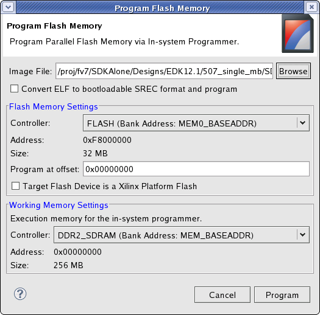

Programming parallel Flash memory
To program the parallel Flash memory:
-
Select Xilinx Tools > Program Flash Memory.
- In the Select Processor dialog box that opens, select the processor instance to which the parallel
Flash memory is connected.
-
In the Image field, specify the executable file, bitstream, or data file to
write to Flash.
-
If you are programming an executable file (in ELF format) and would like
to use a bootloader to boot the processor after reset, click to select the
Convert ELF to bootable SREC format and program check box.
-
Select the Flash memory using the Controller
drop-down list in the Flash Memory Settings area.
-
If you want the file to be written at an offset in the Flash memory,
specify the offset using the Program at
offset field.
Note: If the target flash device is a Xilinx Platform Flash, the flash
programmer cannot query the device when it comes out of
reset. In this case click the Target Flash Device is a Xilinx Platform
Flash check box.
-
Specify any memory that will be used by the Flash programmer as a scratch
memory using the Controller drop-down list in
the Working Memory Settings area.
Note: The current contents
of this memory will be overwritten.
- Click OK. SDK programs the Flash with the
file.


Programming parallel Flash overview

Configuring the JTAG settings
Programming the FPGA

Program Flash Memory dialog box
Copyright © 1995-2013 Xilinx, Inc. All rights reserved.